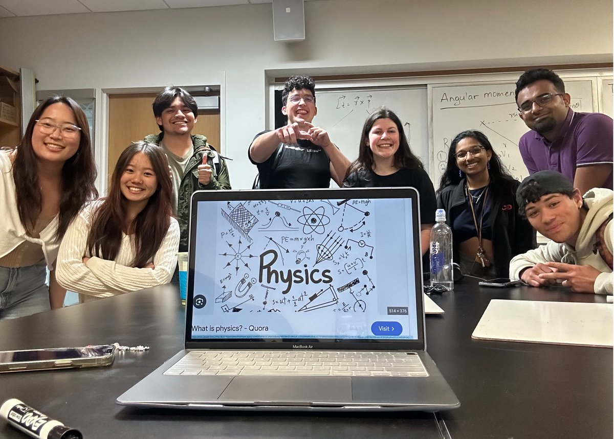

Waleed Bin Khalid
Teaching assistant and lab instructor roles at Georgia Tech and Habib University.
AwardOutstanding Teaching Assistant, Habib University
9courses across physics, electronics, and mathematics
4–5 / 5student evaluations at Georgia Tech, across all metrics
PHYS 2211: Matter and Interactions · Spring 2023, Fall 2023, Spring 2024
- Ran biweekly laboratory experiments and recitation sessions.
- Consistently received student evaluation ratings of 4–5 out of 5 across all metrics.


Habib University
Lab Instructor · July 2021 – December 2021
- Designed and taught the Physics 101 and Basic Electronics labs, strengthening students' understanding of fundamental physics and electronic circuits.
- In the same period I set up the university's new robotics lab, described on the Work page.
Undergraduate Teaching Assistant and Peer Tutor · January 2019 – May 2021
Supported classes of 30–60 students through grading, assignment development, recitation and revision sessions, and one-on-one tutoring. Received the Outstanding Teaching Assistant Award from Habib's Dhanani School of Science and Engineering.
Calculus II
Spring 2019
Engineering Mathematics
Fall 2019
Mechanics and Thermodynamics
Spring 2020
Electrical Machines
Spring and Fall 2020
Probability and Statistics
Spring and Fall 2020
Electric Network Analysis
Spring 2021